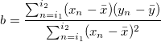
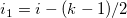
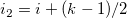
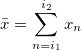
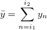

movslope(vx, vy[, n]) function returns a vector to calculate the moving slope at each point with a window width of n and (n-1)/2 points on either side of the point.
The slope at point i with a width of k is:

Where , ,  and 
vector movslope(vx, vy[, n])
vx
vy
n
Return the moving slopes at each point with a window width of n.
The first and last (n-1)/2 points of the output vector are missing values.
Note: If there are missing values in vx or vy, the slopes related to these points in the n window will be missing values. If a slope is infinite, it will be shown as a missing value.
//Col(C) will be filled with slopes at each points. //First and last two cells are missing values. col(C)=movslope(col(A),col(B),5);
//Col(C) only has a numeric cell, which is the slope for all the points. col(C)=movslope(col(A),col(B));